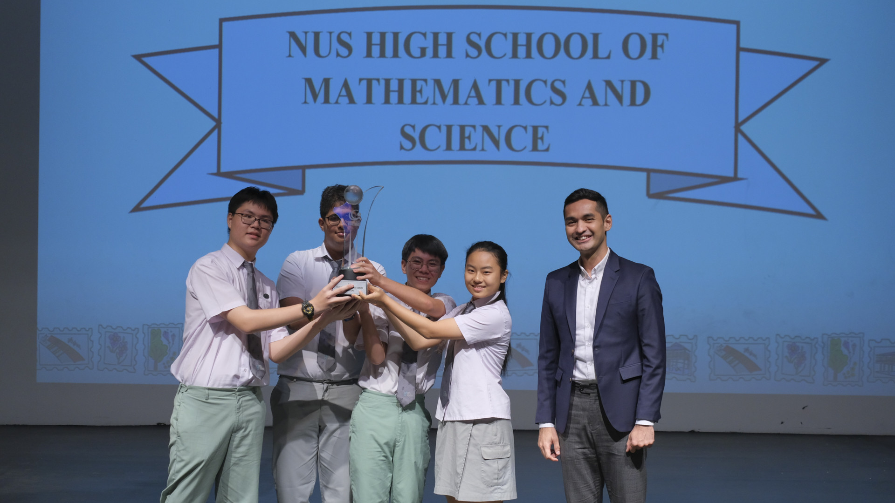
Siswa Raih Prestasi di Kompetisi
Perwakilan siswa mengikuti kompetisi tingkat internasional dan membawa pulang sejumlah penghargaan.
Baca Selengkapnya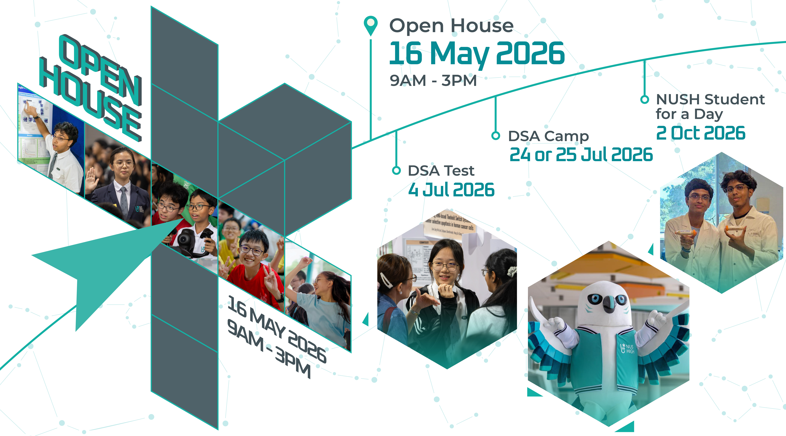
NUS High School of Mathematics and Science adalah sekolah khusus berasrama di Singapura yang berdiri sejak tahun 2005 dan bernaung di bawah National University of Singapore. Sekolah ini membuka pintunya bagi siswa putra dan putri yang berbakat di bidang matematika dan sains.
Selama enam tahun, siswa menempuh kurikulum mandiri yang berujung pada diploma sekolah. Fokus utamanya adalah sains, teknologi, rekayasa, dan matematika, namun bahasa, humaniora, dan seni tetap dipelajari.
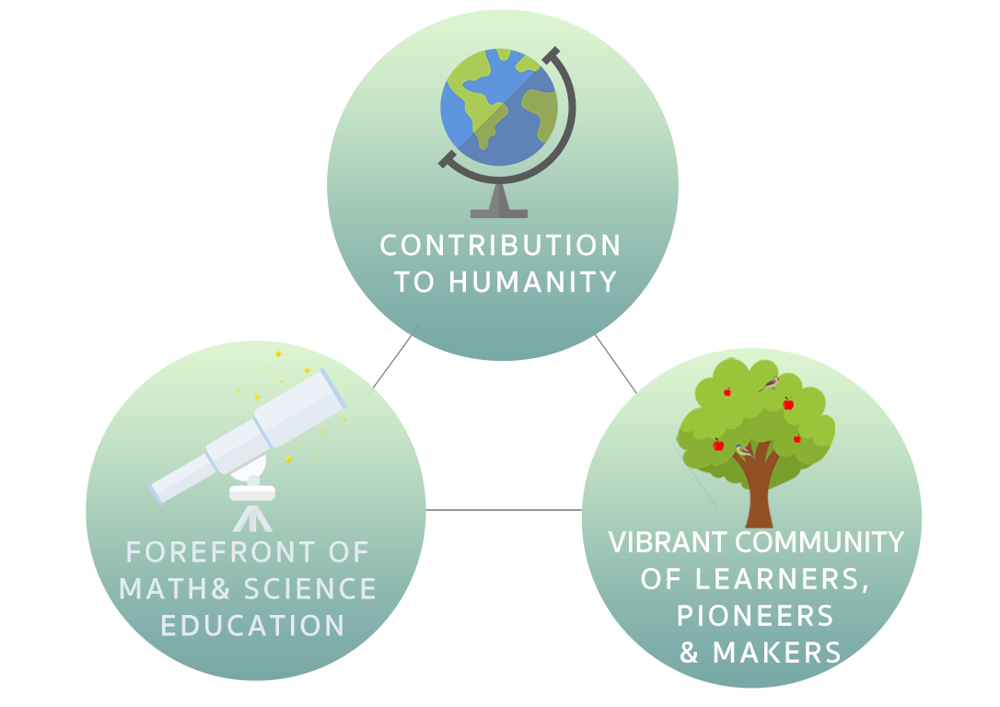
Membentuk generasi pelopor, pemerhati sesama, dan inovator yang siap menghadapi tantangan masa depan.
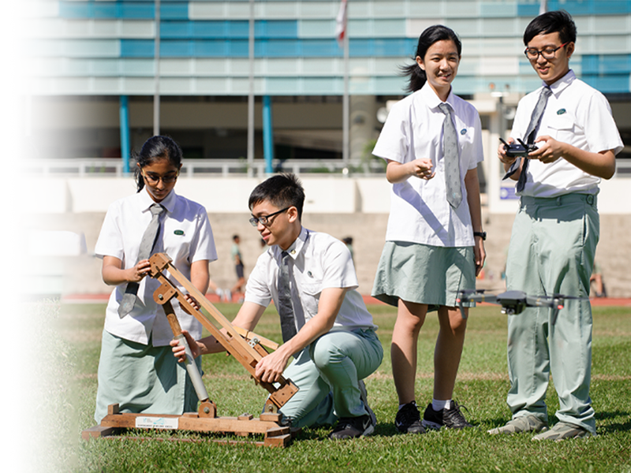
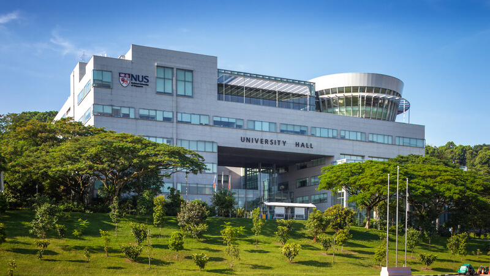
Program enam tahun yang berfokus pada matematika dan sains, tanpa meninggalkan bahasa, humaniora, dan seni.
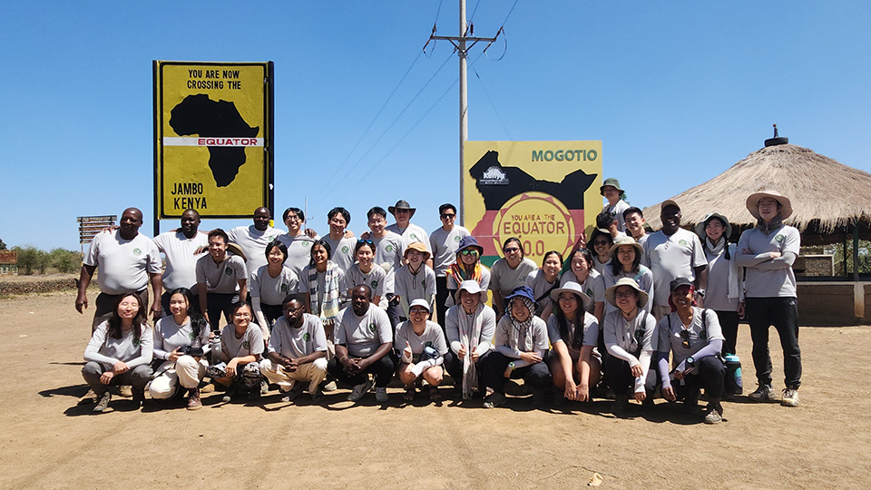
Beragam kegiatan di luar kelas seperti robotik, debat, olahraga, dan seni untuk melatih kerja sama dan kreativitas.
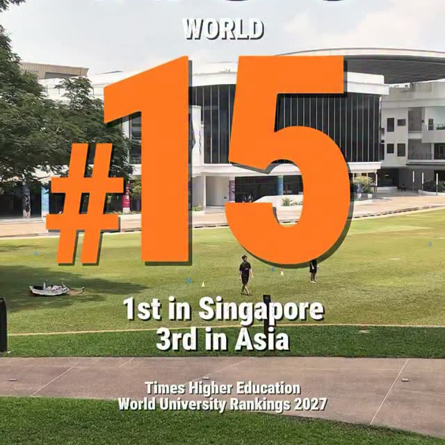
Siswa didorong mengikuti olimpiade, kompetisi, dan proyek penelitian untuk menguji kemampuan mereka.

Perwakilan siswa mengikuti kompetisi tingkat internasional dan membawa pulang sejumlah penghargaan.
Baca Selengkapnya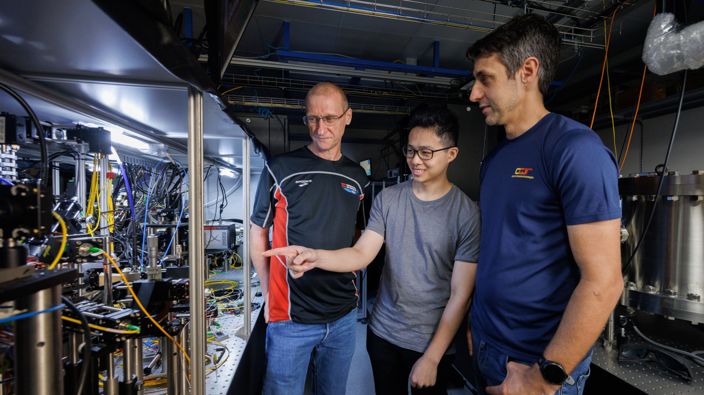
Siswa memamerkan hasil proyek penelitian sains dan teknologi yang dikerjakan selama satu semester.
Baca Selengkapnya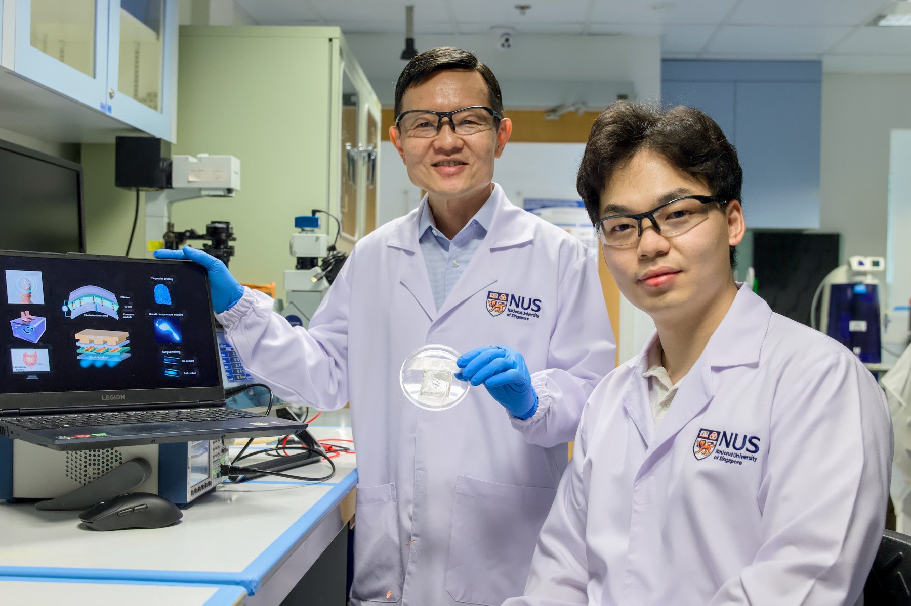
Siswa baru mengenal teman, guru, dan fasilitas sekolah lewat rangkaian kegiatan yang seru.
Baca Selengkapnya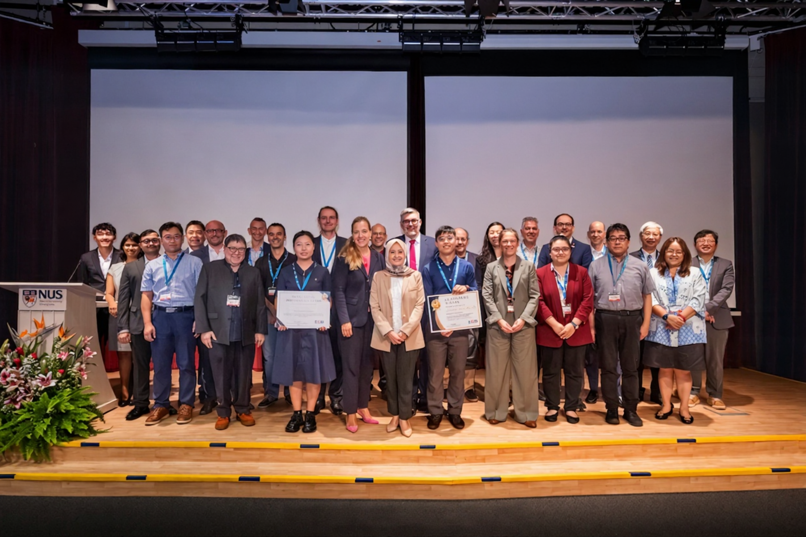
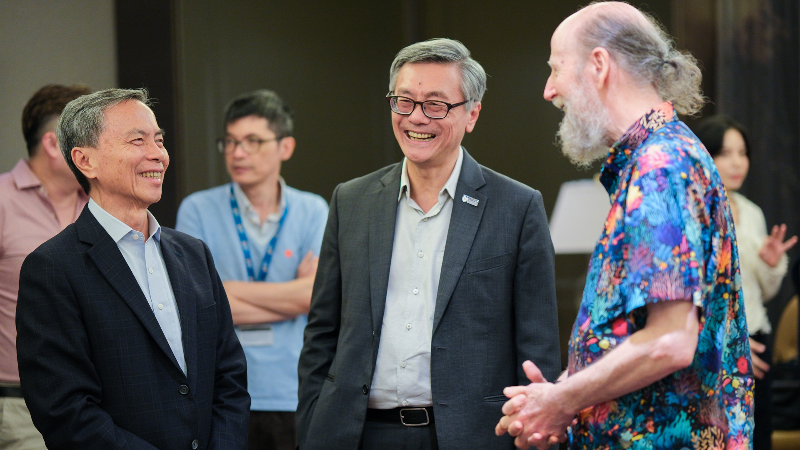
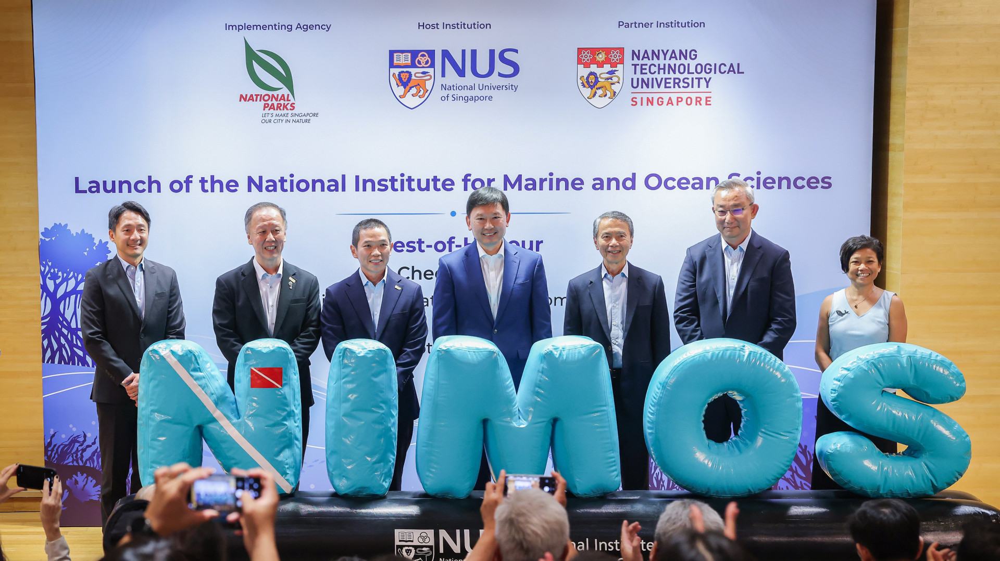
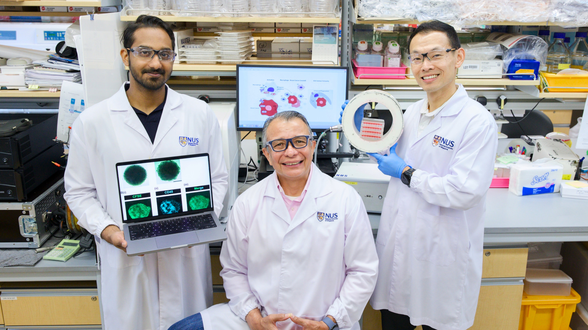
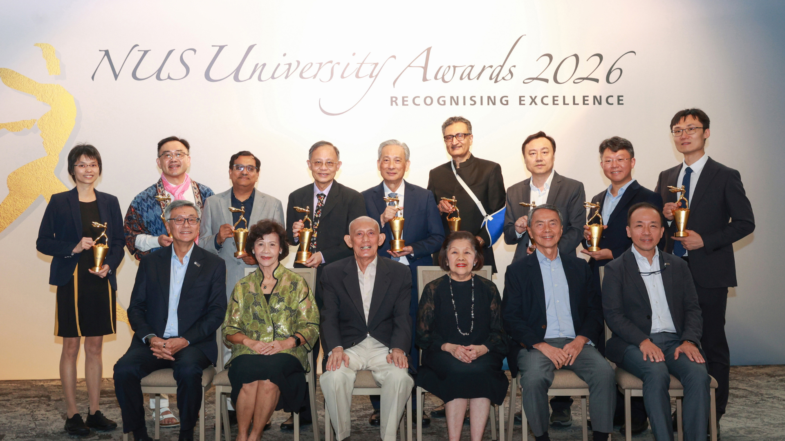